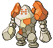
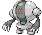
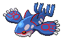
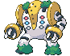

-
articuno #144
- Gelo
- Voador
Articuno é um pokémon pássarolendário que pode controlar o gelo. O bater de suas asas esfria toltamente o ar. Como o resultado, diz-se que quando este Pokémon voa, a neve cai.
-
zapdos #145

- Elétrico
- Voador
Zapdos é um Pokémon lendário de pássaros que tem a capacidade de controlar a eletricidade. Geralmente vive em nuvens de trovoada. O Pókemon ganha poder se for atingido por raios.
-
moltres #146

- Fogo
- Voador
Moltres é um Pokémon pássaro lendário que tem a capacidade de controlar o fogo. Se este Pokémon for ferido, é dito que ele mergulha seu corpo no magma derretido de um vulcão para queimar e cura a si próprio.
-
mewtwo #150

- Psíquico
Faz parte da Dupla Mew, sendo um clone deste. É um dos primeiros Pokémon criados pela ciência com o objetivo de criar o Pokémom mais poderoso do mundo. Por ter sido submetido a testes e perseguido por criminosos, Mewtwo pode ser muito agressivo e não confia facilmente em humanos, tendo-se tornado um protetor de outros Pokémon.
-
mew #151

- Psíquico
Diz-se que Mew possui o ADN de todos os Pokémon. Mew é conhecido por ser um Pokémon brincalhão e feliz, e também por agir de forma infantil por vezes, ao contrário do seu clone Mewtwo. Pode aprender quase todas as técnicas (ataques) que existem.
-
lugia #249

- Psíquico
- Voador
Como Ho-Oh forma a Dupla da Torre e é conhecido como o "Guardião dos Mares". Quando as Aves Lendárias se revoltam, Lugia é o único capaz de parar a sua fúria. Devido ao facto de poder causar tempestades acidentalmente, Lugia isola-se no fundo dos mares.
-
regirock #377
- Rocha
Juntamente com Regice e Registeel, forma o Trio Regi da Região Hoenn. O corpo de Regirock é feito de rochas de diferentes lugares, porque quando as pedras do seu corpo de encontram danificadas ele procura novas pedras para unir ao seu corpo como forma de autorreparo.
-
regice #378

- Gelo
Juntamente com Regirock e Registeel, forma o Trio Regi da Região Hoenn. O corpo de Regice foi formado na Idade do Gelo e mantem uma temperatura de 200º C negativos. Consegue sobreviver a temperaturas elevadas, não pode ser derretido pelo fogo nem mesmo se estiver imerso em lava.
-
registeel #379
- Aço
Juntamente com Regirock e Regice, forma o Trio Regi da Região Hoenn. O corpo de Registeel é formado por um metal mais duro do que qualquer outro conhecido, além disso o material com que o seu corpo é constituído é desconhecido.
-
kyogre #382
- Água
Kyogre foi aquele que criou os mares e por sua vez os oceanos. Rivaliza com Groudon pelo facto de este representar os continentes (o seu oposto, digamos). É normalmente calmo e pacífico, mas quando se encontra com Groudon começa um grande conflito. Há muito tempo atrás aconteceu um combate sem igual entre os dois que causou grande devastação. Este encontro só terminou quando Rayquaza os acalmou e os selou num profundo sono de vários anos.
-
groudon #383

- Terra
Groudon foi o Pokémon que criou a massa terrestre do nosso planeta. Há tempos atrás, travou um combate com Kyogre que só acabou quando Rayquaza surgiu dos céus para pôr fim ao confronto. Groudon e Kyogre ficaram presos num sono profundo. Vive nas profundesas dos vulcões e quando acorda origina grandes terramotos.
-
rayquaza #384

- Dragão
- Voador
É o Pokémon que guarda os céus e foi quem parou o confronto entre Groudon e Kyogre. Rayquaza vive na camada de ozono da atmosfera terrestre e voa a uma velocidade impressionante. É dito que quando Rayquaza hiberna liberta ozono do seu corpo.
-
jirachi #385

- Aço
- Psíquico
Jirachi tem a capacidade de realizar qualquer desejo. Além disso é muito raro encontrá-lo pois só permanece acordado 7 dias em cada 1000 anos. Possui na sua barriga um olho conhecido como "Olho da Verdade" que lhe permite recolher do Cometa Milenar a energia que necessita para a hibernação.
-
deoxys #386
- Psíquico
Deoxys é o Pokémon ADN que possui quatro formas: Normal, Ataque, Defesa e Velocidade. Consegue regenerar qualquer parte do corpo que perca, e sabe-se também que é capaz de criar clones dele próprio. Deoxys existe enquanto o cristal que possui no peito permanecer intacto.
-
regigigas #486
- Normal
É o líder do Trio Regi e é o mais forte dos Golens Lendários. Os seus olhos são como cristais que brilham de acordo com o seu estado de humor. Os cristais vermelhos representam Regirock, os azuis representam Regice e os cinzentos representam Registeel. Diz-se que pode mover continentes com os braços, e só aparece quando os outros Regi's se encontram em problemas. Consegue suportar temperaturas desde os -200ºC até aos 1300º C.